Outerwear
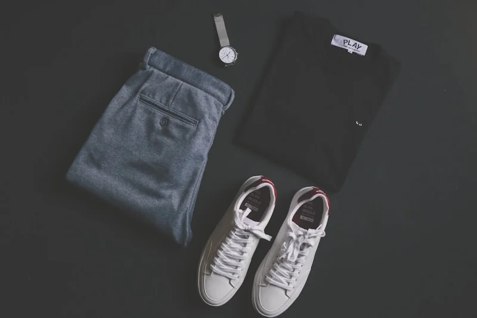
A study in material, proportion, and form. Designed to outlast the season, shaped by hands that understand tactile longevity.
Atelier & Co. explores a slower approach to garments and objects — where material weight, construction honesty, and silhouette discipline matter far more than seasonal excess.
Every piece in Edition 026 was developed through iterative prototyping with master weavers in Biella and leather artisans in Tuscany, seeking proportion that feels both ancient and contemporary.
“Designed to outlast the season, shaped by hands that understand longevity.”

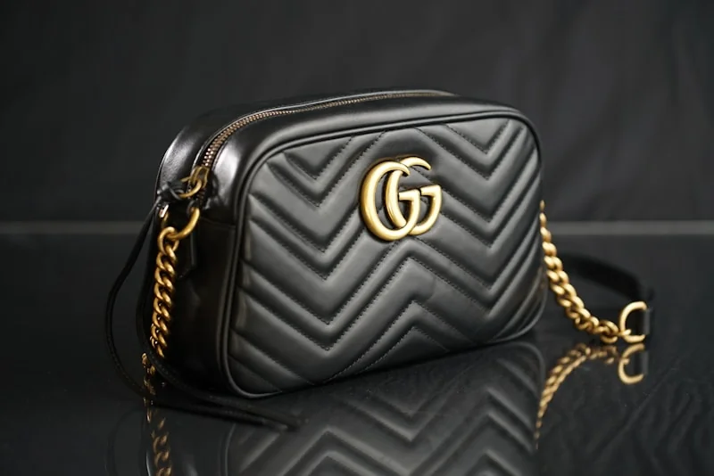
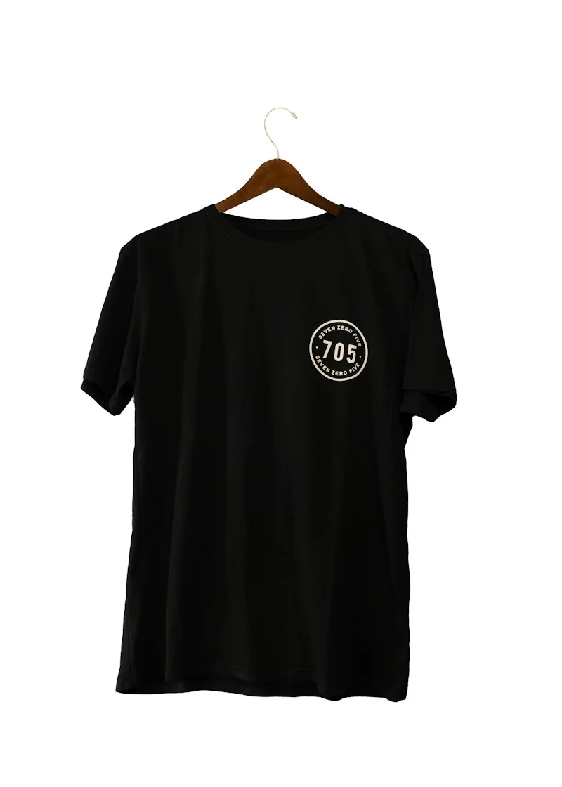
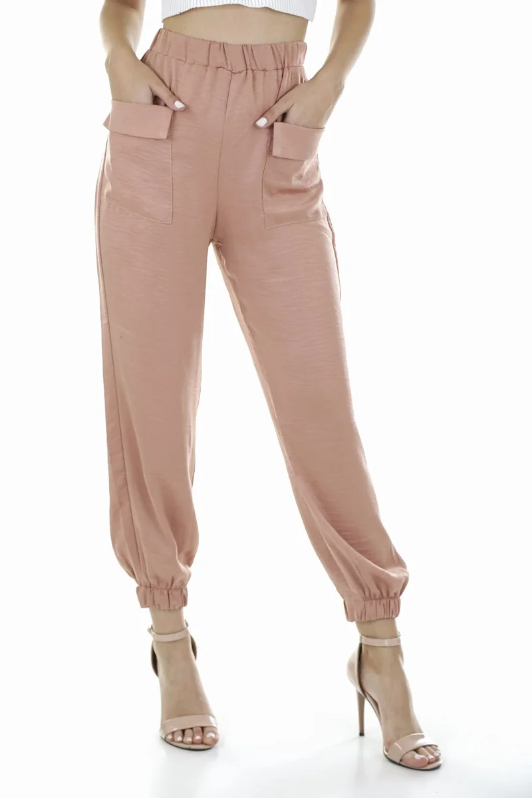
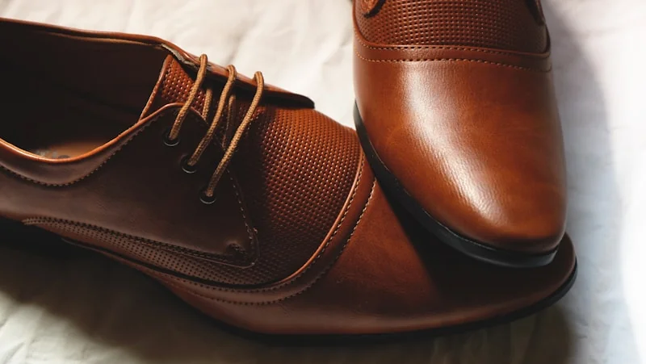
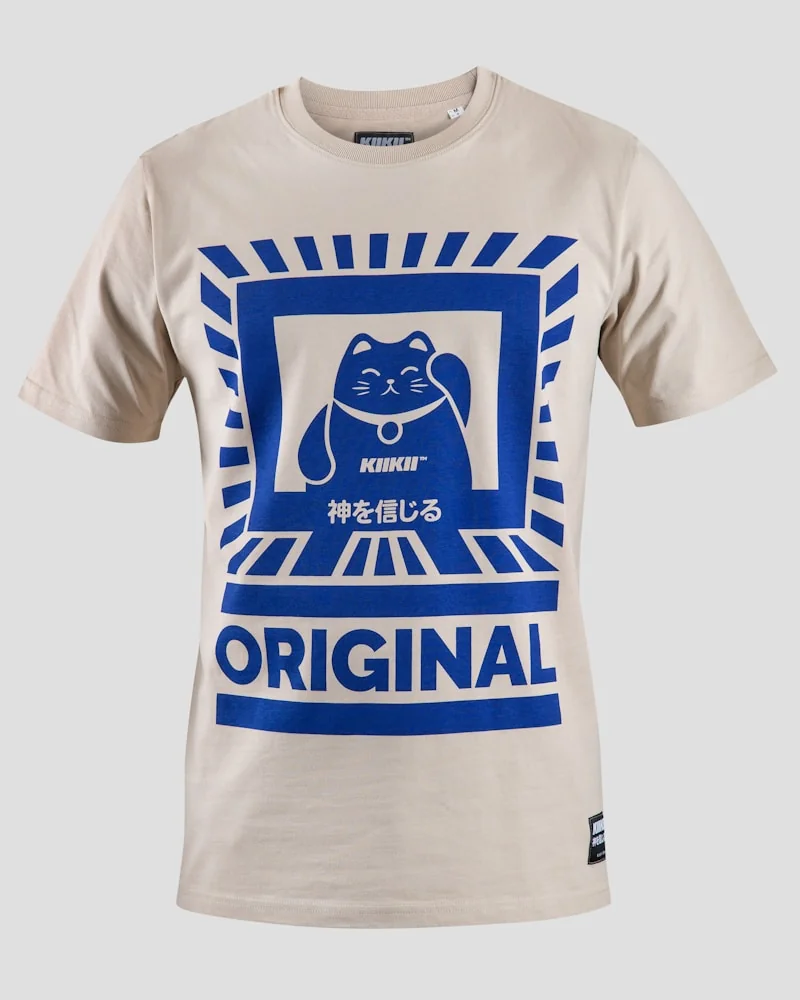
The weight, grain, and warmth of unadorned fibers. We prioritize unblended wools and un-dyed yarns that age with dignity.
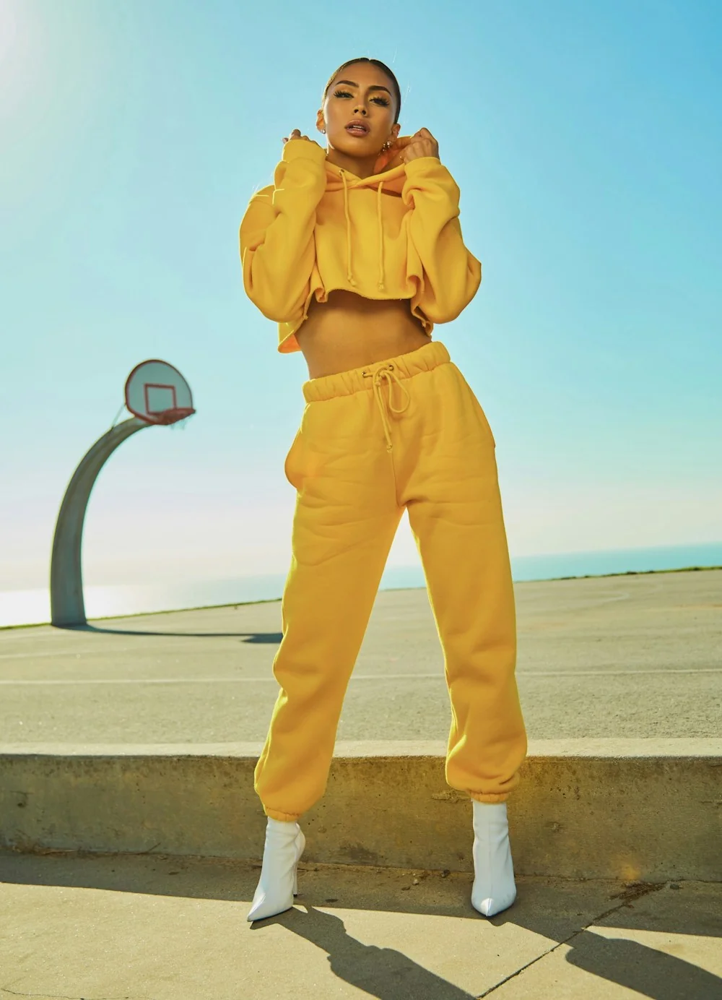
Silhouettes reduced to necessary lines. By softening the shoulder seam and dropping the closure, structure achieves calm grace.
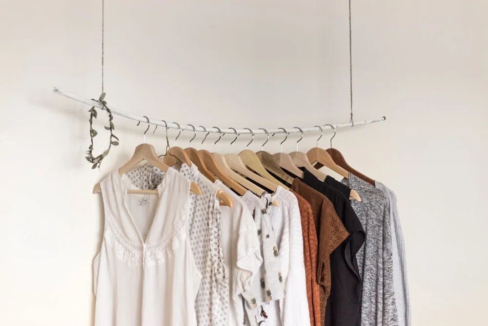
Drape engineered to move in harmony with human walking cadence. Garments that look just as compelling in motion as in stillness.
We refuse synthetic fillers and petroleum-derived coatings. Every raw fiber is sourced directly from ethical mills adhering to centuries of textile tradition.
Dense, double-faced weave that repels moisture naturally while offering exceptional structural drape.
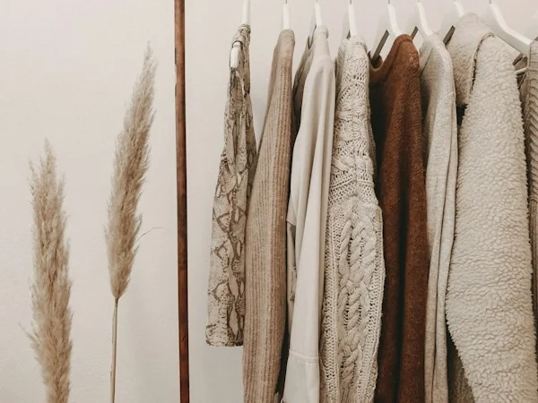
Slowly steeped in oak bark tannins for forty days. Develops a warm golden-amber patina with daily wear.
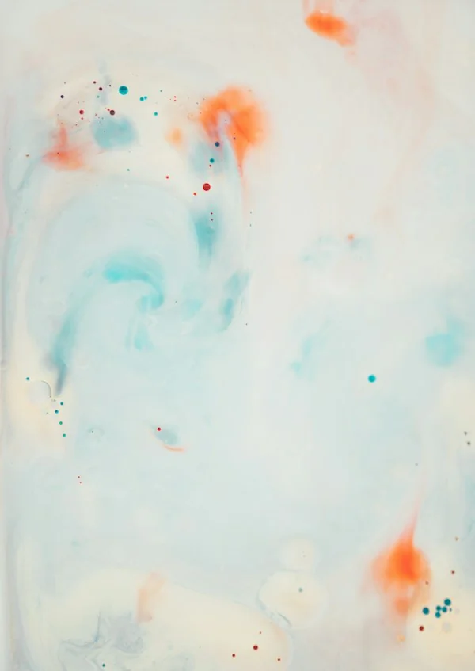
Gently combed from free-roaming mountain goats. Kept in natural raw oatmeal hues without synthetic bleach.
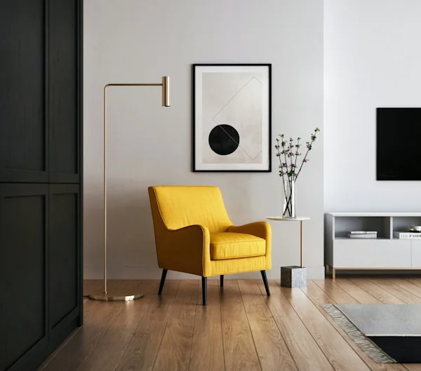
Shuttle-loomed with subtle slub texture, pre-washed in spring water for immediate softness.
Conceived as an everyday vessel for the creative practitioner. Cut from three continuous panels of Tuscan calfskin with hand-beveled edges and saddle stitching.
| Material | 100% Vegetable-Tanned Tuscan Calfskin |
| Hardware | Hand-Finished Solid Brass |
| Dimensions | 42 cm × 31 cm × 16 cm (18L Capacity) |
| Edition | Autumn / Winter 2026 (Numbered 01–150) |
| Origin | Designed in Copenhagen • Crafted in Florence |
“Nothing added without purpose. Nothing kept without meaning.”
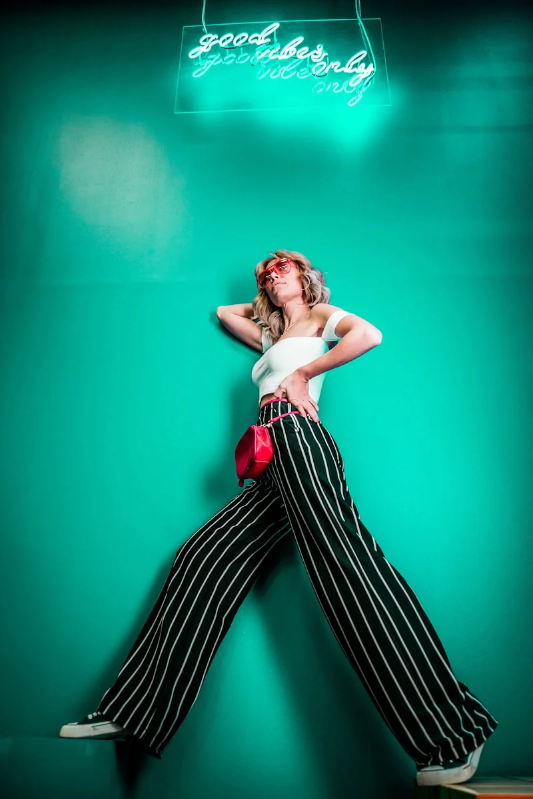
A reflection on the chemical coatings modern fast-fashion relies on, and why pure unblended wool retains warmth and drape for generations.
Helena Vance discusses how subtle shifts in collar pitch and sleeve geometry transform silhouette from rigid to effortlessly relaxed.
Behind the stone walls of a third-generation tannery in Santa Croce, where vegetable tanning remains an unhurried, natural communion with time.